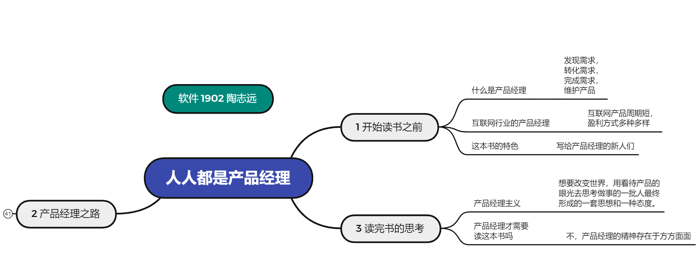
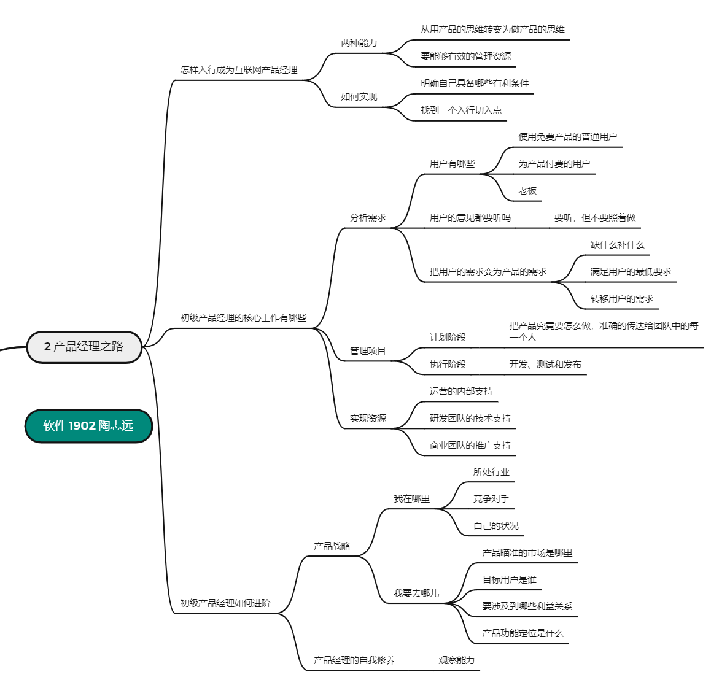

思维导图：

“产品经理之路”的部分展开如下：

《人人都是产品经理》读书笔记
—— 软件 1902 陶志远
一、开始读书之前
在看这本书之前，我们可以思考一下什么是产品经理。在日常生活中，我们有时候会看到一些设计不合理的事情，比如说 USB 插口，我们（几乎）每次使用都会插反一次才能再插进去；学校这学期新装的一系列减速带，让很多骑自行车的同学骑过一条路都要被它们磕到很多次。这些设计让我们感受到这个世界充满了恶意，我们会思考怎么才能设计一个更好的方案解决这些问题？
其实这些思维就已经在靠近产品经理这个职业了。产品经理就是发现问题并描述清楚问题，然后转化为一个需求，发动一批人，将这个需求完成，并且持续不断的以主人的心态去维护这个产品。
在互联网行业，产品经理与传统行业有所区别。在产品生命周期上，互联网行业的产品一般来说研发周期和生命周期都比较短。在盈利方式方面，互联网赚钱的方式多种多样。
作者在这本书中以深入浅出的案例告诉我们如何成为一个互联网产品经理，互联网的产品经理有哪些工作内容。这本书的定位是写给还没有入门或者刚刚入门的初级产品经理们的。
二、产品经理之路
如何成为产品经理？这本书可以归纳为三个方面：怎样入行成为互联网产品经理？初级产品经理的核心工作有哪些？初级产品经理如何继续进阶？下面我从这三个方面来分别说说我的理解。
1. 怎样入行成为互联网产品经理
成为一名互联网产品经理。首先要锻炼和具备两种能力：其一是从用产品的思维转变为做产品的思维。其二是要能够有效的管理资源。所谓从用产品的思维转变为做产品的思维，就是说要能够透过现象看本质，透过产品的功能琢磨产品背后的规则、逻辑和长远规划。另外一项素质要求是能有效的管理资源。由于互联网产品需要快速上线，产品经理往往要在各种资源不够的情况下做产品。这些资源包括信息、时间、人和钱。这就是成为产品经理的两种基础能力：思维能力和管理资源的能力。事实上，多数人在工作和生活中都有运用。
很多人都具备成为产品经理的潜质。那么如何才能真正走到产品经理的岗位上去呢？首先要明确自己具备哪些有利条件。产品经理往往需要一个丰富的背景作为支持，只要能够找到自己的经历背景和产品经历的价值结合点，无论你曾经是做哪一行的，都有机会转行成为产品经理。明确了自身优势以后，你就要找到一个入行切入点，最好是从本职工作中与产品经理有关的工作入手。这样在面试产品经理的职位的时候，你就能够多一些把握和谈资。此外呢你还可以从周边的职位入手，像产品助理需求分析师等等，慢慢转型成为一个产品经理。
2. 初级产品经理的核心工作有哪些
分析需求、管理项目、协调资源，这三项工作就是一个初级产品经理的日常。
分析需求当然指的是用户的需求，可是到底谁才是产品的目标用户呢？互联网产品往往有两类用户，一类呢是使用免费产品的普通用户，还有一类是会因为种种原因而为产品付费的用户。尽管普通用户是免费使用的，但是他们往往占大多数，带来的口碑和流量等传播价值也是非常重要的。
另外还有一个特别的用户，产品经理要注意关注他的需求，那就是老板。尤其是很多初创团队初期的时候，往往没有太多资源去理清用户们真正的需求。那这个时候老板很可能就是最接近业务，最了解行业和用户的。所以产品经理应该尽量帮助老板明确产品的方向。
用户的意见都要听吗？要听，但不要照着做。当用户提出自己需求的时候，他的表达往往是片面的。而产品经理要做的就是擦亮双眼，找出用户的说法背后真正的深层的需求，进而转化为产品的需求。
如何把用户的需求变为产品的需求，从而满足用户的需要呢？有三种方法。
第一，缺什么补什么。这种方法最直接。比如说小明需要某个功能，那么你就给他这个功能。
第二，满足用户的最低要求，这个是比较节省资源的方法。比如说小明想要一个随时在线的客服功能，但是你发现他想要客服功能的本质是因为他偶尔需要一点帮助。于是你给了他一个留言答复的功能，虽然说小明很不爽，但还是凑合着用了。
第三，就是转移用户的需求，这是比较灵活的办法。比如小明想要看小说，小红想要看视频，最终你发现他们的本质需求都是娱乐。于是你给他们上了一款好玩的游戏，虽然不是大伙的初衷，但他们也都是比较满意的。
需求分析之后。产品经理即将进入下一个环节，通过项目来实现需求。
一个产品经理可能想要增加非常多的功能和特征，满足用户需求。但是项目经理却想要尽可能小的控制工作范围，以保证项目在规定时间和预算内完成。
项目管理可以分为两个阶段，计划阶段和执行阶段。
计划阶段就是产品经理就把产品究竟要怎么做，准确的传达给团队中的每一个人。这个时候产品经理就需要写需求文档了。这也是产品经理在项目计划阶段最主要的工作内容。
一旦项目计划获得整个项目组的认可以后，那就进入到了执行计划的阶段。这个时候产品经理就可以歇口气了。下面的活儿将由各位团队成员们完成。项目执行过程包括开发、测试和发布三个环节。
在实际工作中，一个项目能够按照项目计划如期的进行下去，是一件非常困难的事情。那么面对层出不穷的问题，产品经理应该怎么办呢？首先要在项目计划阶段，把那些大大小小的需求目标细化为可操作的实践流程。其次要尽可能的控制项目的任务量，让任务推进在敏捷中前行。
在项目管理中，虽然说产品经理被冠以经理的称号，但事实上并没有哪个团队是归他领导的。产品经理更像是一个中枢系统，协调各种团队资源来帮助你完成一款产品。这些资源包括设计与运营的内部支持，研发团队的技术支持，以及商业团队的推广支持。
3. 初级产品经理如何继续进阶
作者把产品经理的工作比作一个生态系统，这个生态系统呢有两个宏观的元素，阳光和大地。阳光驱动着整个生态循环，不断进行代表产品战略思维，而大地则是一切工作最厚重的根基，代表产品经理的自我修养。
什么是战略思维呢？所谓的产品战略，就是一个互联网产品的宏观发展方向。简单来说就是我在哪里和我要去哪儿的问题。
我在哪里的问题呢？具体来说要弄清楚三点，所处行业、竞争对手，还有自己的状况。如果你要做互联网教育，那么关于教育行业你要清楚有哪些准入门槛儿，国家有哪些鼓励政策，所在地区的教育市场有哪些空白等等。关于竞争对手，你要分析对方的教师队伍，市场品牌定位，想办法了解他们的学员体验、授课质量、制作成本等等，找到竞品的优势和劣势。至于自身，则需要弄清楚，在技术、经验、人脉、资金等方面，我有哪些长处，哪些短板，面临什么样的机会等等。
我要去哪儿指的就是产品瞄准的市场是哪里，目标用户是谁，要涉及到哪些利益关系，产品功能定位是什么等等。比如说做电子商务，那这个行业的细分领域多如牛毛，需要确定自己是要做奢侈品还是做母婴用品。那相应的目标用户呢就会是。金领用户或者是宝妈用户，还要考虑一些利益相关的角色。除了用户，往往还有供应商、物流大客户和政府部门等等。而你的产品定位。都是建立在所有这些取舍的基础上。当然你可能还没有制定产品战略的机会，那么你也可以从一个完整的优秀产品中反观它的产品战略。从而体会一下老板们的大局观。而一个产品经理从做产品到做产品战略的过程，也是从方法论走向价值观的过程。
产品经理的自我修养又是什么？在这一方面，作者特别强调了观察能力对产品经理自我修养的重要性。作者举例说，他有一个朋友非常善于观察疙瘩饭店大门的设计，有的门对着收银台吃饭，流程很顺畅，很受老顾客的欢迎。有的门和消费类型不符，小吃店用高档门令很多新顾客望而却步。有的门呢出入的时候弯弯绕绕，帮助顾客多的返点，分散人流。那么由此可见，什么样的门就决定着留下什么样的顾客。同样的，在产品工作中，你想要留住目标用户，也要符合他们的习惯。生活中处处都有产品的细节，善于观察的人，通常思路更宽，思维更活，也只有积极观察生活的人，才能保有好奇心和创造力，而这些品质正是创造产品的源泉。
三、读完书的思考
读完这本书之后我发现，本书的书名“人人都是产品经理”可以说是作者在工作和生活中悟出的一句箴言。在作者看来，产品经理是一类人，他们骨子里想要改变世界，不断的用看待产品的眼光去思考，去做事，最终形成一套思想和一种态度。那就叫做产品经理主义。
在读这本书的过程中，有人在课程群里问“我不想当产品经理需要读这本书吗？”，在这里我的理解是：需要。这本书提到过产品经理应该爱生活、有理想、会思考、能沟通。我相信这些能力都会在互联网行业或者是在任何行业都需要得到体现。我们作为互联网人，需要抱着这个态度去不断学习新的事物，同时保持敏锐的观察力和独立思考的能力，这样才能在互联网浪潮中保持自己的初心。
参考：